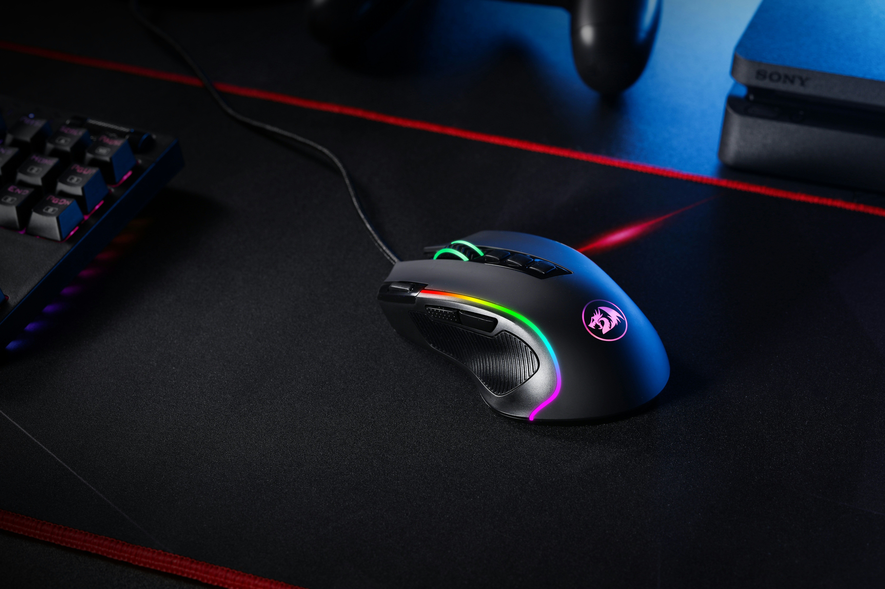

Monitor
O monitor é a principal interface visual. É ele que traduz todos os dados processados lá dentro em imagens que você consegue entender. Hoje em dia, buscamos tecnologias como IPS para cores mais fiéis ou taxas de atualização mais altas (como 144Hz) para que o movimento na tela seja muito mais fluido e suave.
Compre aqui
Mouse
O mouse é a extensão da sua mão no mundo digital. Ele permite a navegação pelo sistema operacional através de um cursor. Existem modelos ópticos e a laser, além dos mouses "gamers", que possuem sensores de altíssima precisão e botões extras que podem ser programados para funções específicas, facilitando o fluxo de trabalho ou o jogo.
Compre aqui
Teclado
O teclado é a principal ferramenta de entrada de texto e comandos. Além do layout padrão que conhecemos (como o ABNT2 no Brasil), ele pode variar entre membrana (mais silencioso e simples) e mecânico (mais durável, com cliques táteis e maior velocidade de resposta), sendo este último o favorito de quem escreve muito ou joga profissionalmente.
Compre aqui
Headset
O headset combina fones de ouvido e microfone em um só dispositivo. Ele é fundamental para a imersão sonora e para a comunicação em chamadas de vídeo ou partidas online. Modelos de qualidade oferecem o som "surround", que ajuda a identificar exatamente de onde vem cada ruído no ambiente virtual.
Compre aqui
Webcam
A webcam tornou-se indispensável na era do trabalho remoto e das lives. Ela captura sua imagem em tempo real para videochamadas ou transmissões. Enquanto a maioria dos notebooks já vem com uma integrada, quem usa PC desktop geralmente opta por modelos externos que oferecem resolução Full HD ou 4K e melhor ajuste de iluminação.
Compre aqui